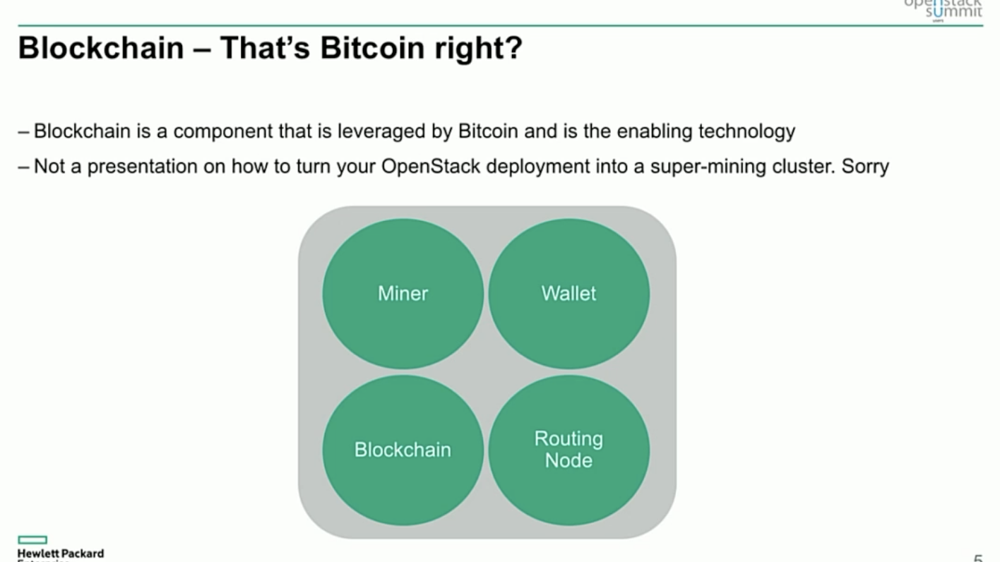

.
BOXY Coin White Paper
By: James Devlin
Table of Contents
- One Pager
- Abstract
- Introduction
- Why Crypto is the Future
- Staking and Sustainability
- Crypto & the Cloud
- Decentralized Ecosystem offering IAAS
- P2P Open Source is the New Corporation
- No Barrier of Entry
- The BOXY Blockchain is Non Profit
- Running a busniess on the BOXY Blockchain
- User Services offered
General Software Design
The BOXY Coin Cloud Ecosystem will initially consist of three distinct software components.
Software Components
- BOXY Coin Crypto Wallet
- 
- Miner/Staker
- Wallet
- Blockchain
- Routing Node
- Source for above: Blockchain and Open Stack Talk by Glen Bowden
- BOXY Node Cloud Host Daemon
- BOXY Decentralized User Gateway
Design Structure
Monetizing Containers for Crypto
Unorganized Notes below:
Open Stack
- Keystone - used to add users
- Glance - launches instances from images
- NOVA - Computing domain
- nuetron - network services
- swift - object storage
- cinder - block storage
- Horizon Gateway - dashboard of open stack
- Ceilometer - used for billing structure - telemetry project
- Heat - orchestration
JuJu